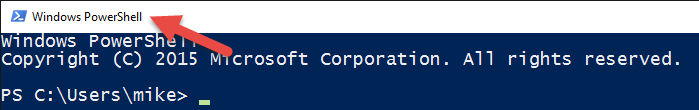
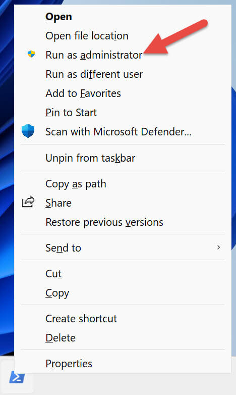

PowerShell入門
PowerShellは、マイクロソフトがWindowsシステム向けに開発したコマンドラインシェルプログラム＋スクリプト環境であり、主にシステム管理と自動化タスクに使用されます。
在 Windows 11では、スタートメニューで直接検索PowerShellするだけです。

一般的なショートカットは次のとおりです（64ビットシステムの場合）：
| ショートカット名 | 説明 |
|---|---|
| Windows PowerShell | 64ビットコマンドライン版 |
| Windows PowerShell ISE | 64ビットGUIスクリプトエディター |
| Windows PowerShell (x86) | 32ビットコマンドライン版 |
| Windows PowerShell ISE (x86) | 32ビットGUIスクリプトエディター |
⚠️ 注意：Windows 11自体は32ビットシステムをサポートしていませんが、古いプログラムとの互換性のためにx86版のPowerShellも含まれています。
PowerShellを起動する方法
通常の起動方法
Windows PowerShellのショートカットをクリックして、PowerShellコンソールを起動します。
PowerShellコンソールのタイトルバーに「Windows PowerShell」と表示されます。

注意：一部のコマンドは、通常のユーザーとしてPowerShellを実行しても正常に動作しますが、PowerShell自体はユーザーアカウント制御（UAC）に関与しないため、ユーザーに権限昇格を促すことはできません。
ユーザーアカウント制御（UAC）の説明
UACの役割：Windowsのセキュリティ機能であり、悪意のあるコードが昇格した権限で実行されるのを防ぎます。
通常ユーザーの権限制限：通常のユーザーとして実行している場合、管理者権限が必要なコマンドを実行しようとするとエラーになります。
例：Windowsサービスの停止：
Stop-Service -Name W32Time
エラーメッセージの例：
Stop-Service : Service 'Windows Time (W32Time)' cannot be stopped due to
the following error: Cannot open W32Time service on computer '.'.
At line:1 char:1
+ Stop-Service -Name W32Time
+ ~~~~~~~~~~~~~~~~~~~~~~~~~~
+ CategoryInfo : CloseError: (System.ServiceProcess.ServiceCon
troller:ServiceController) [Stop-Service], ServiceCommandException
+ FullyQualifiedErrorId : CouldNotStopService,Microsoft.PowerShell.Comm
ands.StopServiceCommand
解決方法：ローカル管理者権限に昇格したユーザーでPowerShellを実行する必要があります。2つ目のドメインユーザーアカウントが構成されており、最小権限の原則に適合しています。ドメイン管理者ではなく、ドメイン内での権限昇格権限もありません。
操作手順：
- Windows PowerShellのショートカットを右クリックします
- 「管理者として実行」を選択します

システムプロンプト：現在通常のユーザーでログインしているため、Windowsはローカル管理者ユーザーの資格情報の入力を求めます。

昇格の確認：昇格後のPowerShellウィンドウのタイトルバーには「管理者：Windows PowerShell」と表示されます。

効果：昇格したPowerShellで管理者権限を必要とするコマンドを実行しても、UACエラーは発生しません。
権限昇格の原則：絶対に必要な場合にのみ、PowerShellを管理者として昇格させるべきです。
リモートコンピューター：リモートコンピューターを対象とする場合、PowerShellの権限を昇格させる必要はありません。権限の昇格はローカルコマンドにのみ影響します。
ショートカットの固定：PowerShellまたはWindowsターミナルのショートカットをタスクバーに固定すると、起動が便利になります：

昇格したPowerShellを安全に起動する：権限を昇格してPowerShellを起動する必要がある場合は、Shiftキーを押しながら、タスクバーに固定されているPowerShellアイコンを右クリックし、「管理者として実行」を選択します。

PowerShellのバージョンと実行ポリシーを確認するガイド
一、PowerShellのバージョンを確認する
PowerShellには自動変数が提供されており$PSVersionTable、現在のPowerShellセッションのバージョンと関連情報が含まれます。
$PSVersionTable
出力結果は次のようになります：
Name Value
---- -----
PSVersion 5.1.22621.2428
PSEdition Desktop
PSCompatibleVersions {1.0, 2.0, 3.0, 4.0...}
BuildVersion 10.0.22621.2428
CLRVersion 4.0.30319.42000
WSManStackVersion 3.0
PSRemotingProtocolVersion 2.3
SerializationVersion 1.1.0.1
バージョンの説明
- Windows PowerShell 5.1は、現在サポートされているWindowsバージョンにプレインストールされており、推奨されるバージョンです。
- PowerShell 7（クロスプラットフォーム版）はWindows PowerShell 5.1の代替品ではなく、それと並行してインストールされる別製品です。
- PowerShell 6（PowerShell Coreとも呼ばれる）はサポートされなくなりました。
二、実行ポリシー（Execution Policy）を理解する
実行ポリシーはPowerShellのセキュリティ機能であり、スクリプトの実行条件を制御して、悪意のあるスクリプトが意図せず実行されるのを防ぎます。
注意：実行ポリシーはセキュリティ境界ではありません。熟練したユーザーは回避可能です。
実行ポリシーの適用範囲
- ローカルコンピューター（LocalMachine）、現在のユーザー（CurrentUser）、現在のセッション（Process）に対して設定できます。
- グループポリシーを使用して、ユーザーとコンピューターの実行ポリシーを管理することもできます。
一般的なWindowsのデフォルト実行ポリシー
| OSバージョン | デフォルトの実行ポリシー |
|---|---|
| Windows Server 2022 | RemoteSigned |
| Windows Server 2019 | RemoteSigned |
| Windows Server 2016 | RemoteSigned |
| Windows 11 | Restricted |
| Windows 10 | Restricted |
Restrictedデフォルトでは、スクリプトの実行が一切許可されないことを示します。
三、現在の実行ポリシーを確認する
現在のポリシーを確認する：
Get-ExecutionPolicy
出力結果は次のようになります：
Restricted
すべてのスコープの実行ポリシー設定を一覧表示する：
Get-ExecutionPolicy -List
出力は次のようになります：
Scope ExecutionPolicy
----- ---------------
MachinePolicy Undefined
UserPolicy Undefined
Process Undefined
CurrentUser Undefined
LocalMachine Undefined
四、実行ポリシーがスクリプト実行に与える影響の例
スクリプトファイルがあるとしますGet-TimeService.ps1、このコマンドを対話型コマンドラインで直接実行する場合は正常です：
Get-Service -Name W32Time
ただし、スクリプト内から同じコマンドを実行すると、PowerShellはエラーを返します。
.\Get-TimeService.ps1
エラーメッセージ：
.\Get-TimeService.ps1 : File C:\tmp\Get-TimeService.ps1 cannot be loaded
because running scripts is disabled on this system. For more information,
see about_Execution_Policies at
https:/go.microsoft.com/fwlink/?LinkID=135170.
At line:1 char:1
+ .\Get-TimeService.ps1
+ ~~~~~~~~~~~~~~~~~~~~~
+ CategoryInfo : SecurityError: (:) [], PSSecurityException
+ FullyQualifiedErrorId : UnauthorizedAccess
五、実行ポリシーの変更
1. RemoteSignedに設定する（推奨）
ローカルスクリプトと、信頼できる発行元によって署名されたリモートスクリプトの実行を許可します。
Set-ExecutionPolicy -ExecutionPolicy RemoteSigned
- ローカルコンピューター（LocalMachine）の実行ポリシーを変更するには、管理者としてPowerShellを実行する必要があります。
- 変更時には確認プロンプトが表示されます：
Do you want to change the execution policy? [Y] Yes [A] Yes to All ...
2. 現在のユーザーの実行ポリシーのみを変更する（管理者権限は不要）
Set-ExecutionPolicy -ExecutionPolicy RemoteSigned -Scope CurrentUser
六、よくあるエラーメッセージと解決方法
管理者権限に昇格せずにLocalMachineポリシーを変更しようとした場合のエラー：
Access to the registry key 'HKEY_LOCAL_MACHINE\SOFTWARE\Microsoft\PowerShell\1\ShellIds\Microsoft.PowerShell' is denied.
解決方法：管理者としてPowerShellを実行してから再試行するか、現在のユーザーポリシーのみを変更します。
七、変更後の確認
実行ポリシーをRemoteSignedに変更した後、スクリプトを実行します：
.\Get-TimeService.ps1
出力結果：
Status Name DisplayName ------ ---- ----------- Running W32Time Windows Time
八、注意事項
- スクリプトはプレーンテキストファイルで、拡張子は
.ps1。
- 推奨されるのはVisual Studio Codeまたはテキストエディターでスクリプトを作成することです。
- 実行ポリシーを変更する前に、公式ドキュメントをお読みください
about_Execution_Policies関連するセキュリティリスクを理解してください。
その他の拡張
.ps1。about_Execution_Policies関連するセキュリティリスクを理解してください。
クリックしてノートを共有
ノートは本記事の内容を拡張したものである必要があります！
記事投稿は、ここをクリック
登録招待コードの取得方法
ノートを共有する前にログインが必要です！
登録招待コードの取得方法